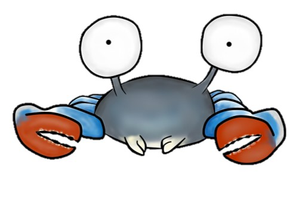
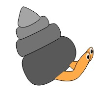
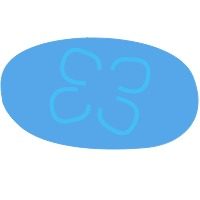
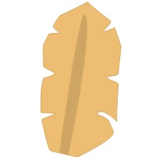
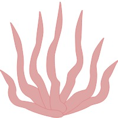
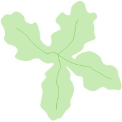

Wallops Island Organism Potpourri
Below are some of the most commonly observed phyla along with one vector drawn species.
Arthropoda - Crustaceans
75% of all species are arthropoda. Their epidermis secretes a protective calcium carbonate and chitin exoskeleton.
Blue Crab (Callinectes sapidus)
Mollusca - Snails, Bivalves, Caphalopods
Most mollusks have a hard external shell. All mollusks develop similar larvae, and all have a complete digestive system, and blood circulatory system.
Common Periwinkle (Littorina littorea)
Echinodermata - Urchins, Sea Stars, Sea Cucumbers
"Echinoderm" means spiky skin. They have a five part radial symetry and a water vascular system.
Forbes Asterias Sea Star (Asterias forbesi)
Cnidaria - Anemones, Jellyfish, Hydra
Cnidaria come in either the polup or medusa form, xthey all have radial symetry, and only two layers of living tissue.
Moon Jelly (Aurelia aurita)
Porifera - Sponges
Sponges lack both anterior and posterior ends. They don't have any mouth!
Boring Sponge (Clonia spp.)
Phaeophyta - Brown Algae
Brown algae is found primarly in colder waters. It can grow to 60 meters.
Delicate ribbon weed (Punctaria latifolia)
Rhodophyta - Red Algae
Rhodophyta are the most common species in the sub-littoral zone. They vary in color from red to green to black.
False Aghardiella(Gracilaria verrucosa)
Chlorophyta - Green Algae
Chlorophyta is a paraphyletic group containing 7,000 species of green algae. Chlorophyte actually means "green plant" in greek.
Sea Lettuce (Ulva lactuca)